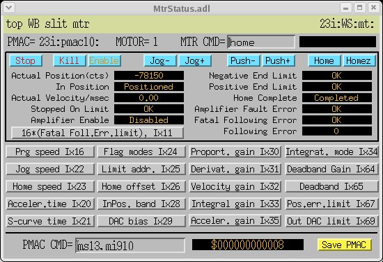
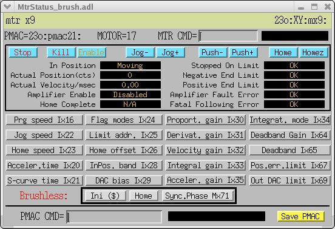
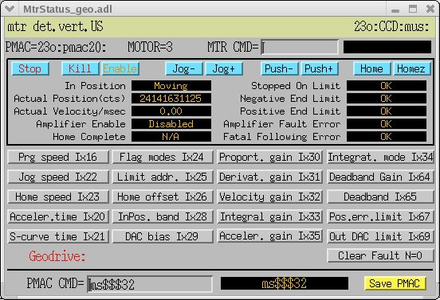

Use "MOTION" button to access motion
control screens.
1) Click "Enable" button to enable the servo amplifier. Amplifier Enable status bit has to alter from "Disabled" to "Enabled".
2) Click "Stop" button to close the servo loop. In Position status bit has to display a "Positioned" state.
Some motors are DC brushless servo, such as a motor on the goniometer "omega" rotary stage or motors on the "X" and "Y" stages of the XY Positioner-9. These motors require to establish rotor position relative to the motor coils. To initialize such motor:
1) Click "Ini ($)" button. This will use a Hall sensor on the motor to establish rough phasing with an accuracy of +-15 degrees. Amplifier Enable status bit should display "Enabled", and In Position status bit should display "Positioned".
2) Click "Home" button. This will move motor till the encoder index position.
3) When motor reaches encoder index position "Actual Position(cts)" field will be resetted to 0. After that, to perform an exact phasing one should click the "Sync.Phase Mx71" button. This will copy an exact phase value to the phase register.
Four motors are controlled by Geo MACRO drives. These motors are for the MAR CCD detector motion. Click "Clear Fault N..." button before initializing these motors. This should clear an amplifier fault register on the Geo MACRO drive. Then proceed with initialization of the motor as described above.

1) Click a "Home speed Ix23" button to request direction and value of the motor home speed. This will place a command <Ixx23> into the "MTR CMD=" field; and PMAC controller response will appear next to it. If motion controller returned a positive value, the negative limit switch should be used in the homing procedure; otherwise - the positive limit switch.
2) Click "Jog-" or "Jog+" button to run the motor and wait until motion will be stopped by the limit switch.
The Negative/Positive End Limit status will change its state from "OK" to "Tripped".
3) Click "Home" button. Motor should move off the limit switch. The Negative/Positive End Limit status will change its state from "Tripped" to "OK". The "Actual Position(cts)" field will be resetted to 0.
Exceptions:
1) Goniometer "omega" axis has no limit switches; skip the first and the second steps, and proceed to the step 3. Rotary stage will be homed by the encoder index position.
2) Zoom axis on both video cameras have no limit switches nor encoders; skip the first and the second steps. Click "Jog+" button, then "Stop" button; this will move motor in the positive direction to make sure the home switch is not activated; proceed to the step 3. Zoom will be homed at the lowest magnification.
Hard reset: cycle the power at the VME crate, wait for IOC reboot, run homing scripts for affected motors.
Resetting the UMAC MACRO and
Geo MACRO drives
Soft reset: send a command to
the PMAC controller:
ms$$$0 - resets Geo MACRO #1 (vertical motors for MAR CCD support)
ms$$$4 - resets UMAC MACRO #1
ms$$$16 - resets Geo MACRO #2
ms$$$32 - resets UMAC MACRO #2
Hard reset: cycle the power at the UMAC MACRO chassis / Geo MACRO drive.
Run homing scripts for affected motors.
Resetting motor amplifiers
Soft reset (available only for
Geo MACRO drives):
msclrf0
msclrf16
Hard reset: may be required for high power amplifiers used with brushless DC servo motors.
If "Amplifier enable" LED is off on the AeroTech amplifier while status at the PMAC controller is "Enabled" - unplug the amplifier power for 5-10-15 seconds and plug it back.
If "Power" LED is flashing on the TA310 amplifier, unplug the amplifier power for 5-10-15 seconds and plug it back. "Power" LED should be in the "ON" state.
Initialization of the motors
After switching on the power for a VME crate, UMAC MACRO chassis and motor amplifiers all motors are in the passive state: motor amplifiers are disabled, and servo loops are open. To initialize a motor you will need a motor control screen accessible from hierarchical menu "MOTION -> ... -> ... -> ... -> View Status / Jog / Home motor". This screen is different for different motor types. Most of them are DC brush servo motors and step motors. To initialize such motor:1) Click "Enable" button to enable the servo amplifier. Amplifier Enable status bit has to alter from "Disabled" to "Enabled".
2) Click "Stop" button to close the servo loop. In Position status bit has to display a "Positioned" state.

Some motors are DC brushless servo, such as a motor on the goniometer "omega" rotary stage or motors on the "X" and "Y" stages of the XY Positioner-9. These motors require to establish rotor position relative to the motor coils. To initialize such motor:
1) Click "Ini ($)" button. This will use a Hall sensor on the motor to establish rough phasing with an accuracy of +-15 degrees. Amplifier Enable status bit should display "Enabled", and In Position status bit should display "Positioned".
2) Click "Home" button. This will move motor till the encoder index position.
3) When motor reaches encoder index position "Actual Position(cts)" field will be resetted to 0. After that, to perform an exact phasing one should click the "Sync.Phase Mx71" button. This will copy an exact phase value to the phase register.

Four motors are controlled by Geo MACRO drives. These motors are for the MAR CCD detector motion. Click "Clear Fault N..." button before initializing these motors. This should clear an amplifier fault register on the Geo MACRO drive. Then proceed with initialization of the motor as described above.

Homing procedure
Most of the motors at the beamline are used with incremental encoders. A few step motors have no encoders though. To establish a referenced position a homing procedure has to be completed, i.e. motion is performed until the limit switch is engaged, then direction of motion is reversed and the position of the first index pulse after the limit switch is disengaged becomes a point of origin for given axis. If encoder does not have an index pulse, the axis origin is selected at the limit switch disengaging point. Steps for the homing procedure are:1) Click a "Home speed Ix23" button to request direction and value of the motor home speed. This will place a command <Ixx23> into the "MTR CMD=" field; and PMAC controller response will appear next to it. If motion controller returned a positive value, the negative limit switch should be used in the homing procedure; otherwise - the positive limit switch.
2) Click "Jog-" or "Jog+" button to run the motor and wait until motion will be stopped by the limit switch.
The Negative/Positive End Limit status will change its state from "OK" to "Tripped".
3) Click "Home" button. Motor should move off the limit switch. The Negative/Positive End Limit status will change its state from "Tripped" to "OK". The "Actual Position(cts)" field will be resetted to 0.
Exceptions:
1) Goniometer "omega" axis has no limit switches; skip the first and the second steps, and proceed to the step 3. Rotary stage will be homed by the encoder index position.
2) Zoom axis on both video cameras have no limit switches nor encoders; skip the first and the second steps. Click "Jog+" button, then "Stop" button; this will move motor in the positive direction to make sure the home switch is not activated; proceed to the step 3. Zoom will be homed at the lowest magnification.
Homing script
Homing of the motor assemblies automated by Perl scripts can be started from the hierarchical menu by pressing "TOOLS" -> "Home Beamline Optics/Endstation motors" -> "Home ...". Script will open an MEDM screens for affected motors and a terminal window which will show the progress of homing procedures.Calibration
Calibration of the motion axes to physical units (millimeters, degrees, photon energy in keV, etc.) are done with MEDM calibration screens accessible from the hierarchical menu by pressing "MOTION" -> ... -> ... -> "Calibrate". Slope, offset and possibly other parameters are used to translate motor counts to physical units.Troubleshooting
Resetting the Turbo PMAC2 VME UltraLite motion controller
Soft reset: send a <$$$> command to the PMAC controller, then reboot the IOC.Hard reset: cycle the power at the VME crate, wait for IOC reboot, run homing scripts for affected motors.
Resetting the UMAC MACRO and
Geo MACRO drives
Soft reset: send a command to
the PMAC controller:ms$$$0 - resets Geo MACRO #1 (vertical motors for MAR CCD support)
ms$$$4 - resets UMAC MACRO #1
ms$$$16 - resets Geo MACRO #2
ms$$$32 - resets UMAC MACRO #2
Hard reset: cycle the power at the UMAC MACRO chassis / Geo MACRO drive.
Run homing scripts for affected motors.
Resetting motor amplifiers
Soft reset (available only for
Geo MACRO drives):msclrf0
msclrf16
Hard reset: may be required for high power amplifiers used with brushless DC servo motors.
If "Amplifier enable" LED is off on the AeroTech amplifier while status at the PMAC controller is "Enabled" - unplug the amplifier power for 5-10-15 seconds and plug it back.
If "Power" LED is flashing on the TA310 amplifier, unplug the amplifier power for 5-10-15 seconds and plug it back. "Power" LED should be in the "ON" state.